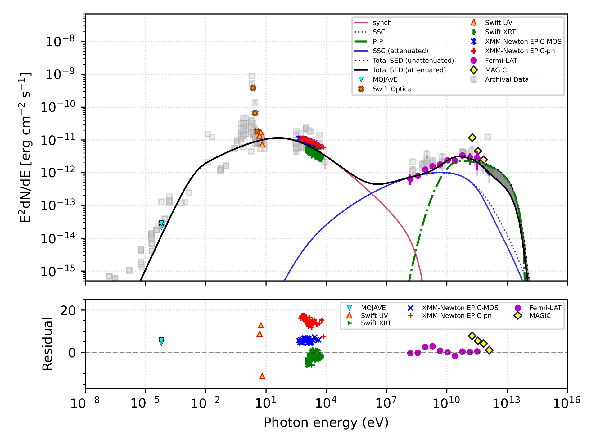

Multi-wavelength Study of Mrk 180
In this work, we present a detailed timing and spectral investigation of the high-frequency-peaked BL Lac object Mrk 180, based on long-term X-ray and gamma-ray observations. Examining the 30-day binned Fermi-LAT gamma-ray light curve, we find that the source remains largely steady over time, showing no clear flaring episodes. This lack of pronounced variability limits the scope for detailed temporal analysis, but provides a stable foundation for broadband modeling. We therefore focus on constructing and modeling the long-term multi-wavelength spectral energy distribution (SED). Our analysis shows that a leptohadronic (pp) scenario provides a consistent and physically motivated description of the observed emission across energy bands. Finally, by comparing our simulation results with current observational constraints, we assess the potential role of Mrk 180 as a source of ultra-high-energy cosmic rays (UHECRs). We find that, under conservative assumptions for extragalactic magnetic field strengths, Mrk 180 is unlikely to contribute significantly to the Telescope Array (TA) hotspot.
